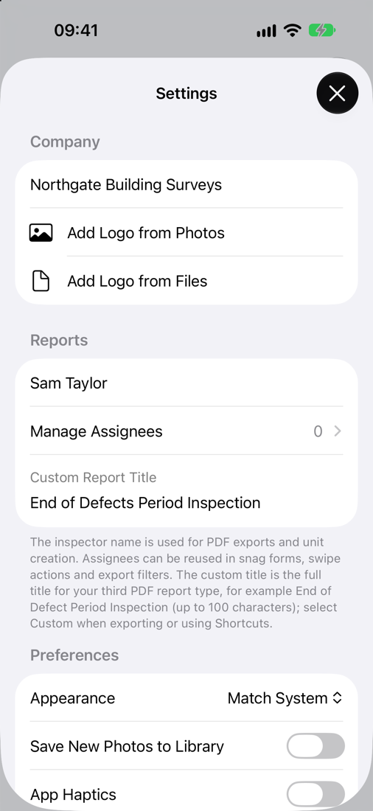
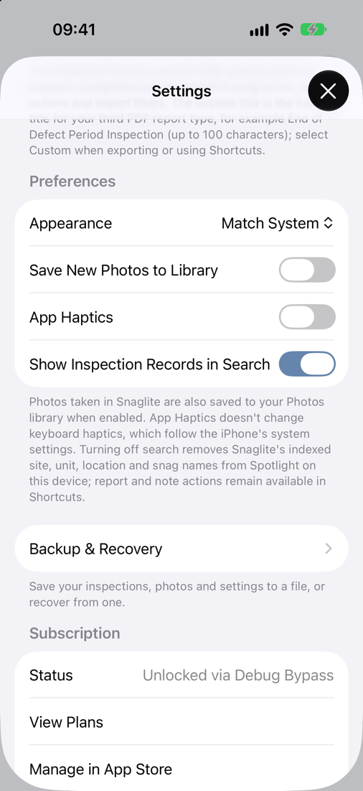

Settings and Assignees
Open Settings from the Sites screen with ⋯ → Settings. Check it before you carry out live inspections.
Company
- Company Name – shown on your reports.
- Logo – add your logo from Photos or Files. It appears at the top of the report cover. Use Remove Company Logo to take it off.
Reports
- Inspector Name – shown on reports and used when you create units.
- Manage Assignees – your list of reusable assignees (see below).
- Custom Report Title – the full title for your third report type, for example “End of Defects Period Inspection” (up to 100 characters). Choose Custom as the report type when exporting or in Shortcuts to use it.

Assignees
Assignees are the people, trades or companies responsible for fixing snags. Set them up in Settings → Reports → Manage Assignees, or add one on the spot while editing a site. Once saved, they are available in snag forms, swipe actions, bulk Assign, report filters and Shortcuts.
Main Contractor · Joiner · Electrician · Painter · Client Supply Item
Preferences
- Appearance – Light, Dark or Match System. This changes the app only, not your reports.
- Save New Photos to Library – also save photos you take in Snaglite to your Photos library.
- App Haptics – vibration feedback in the app. Keyboard haptics follow your iPhone’s own settings.
- Show Inspection Records in Search – lets you find sites, units, locations and snags from iPhone Spotlight search. Turning it off removes them from Spotlight on this device. Shortcuts actions keep working either way.

Backup & Recovery
Make a backup file of everything in Snaglite, or recover from one. See Backup, Recovery and iCloud.
Subscription
Shows your subscription status, with View Plans, Manage in App Store and Restore Purchases. Subscriptions renew automatically unless cancelled at least 24 hours before the end of the current period. You can manage or cancel your subscription in your Apple Account settings.
Help
- Open Welcome Guide – the quick introduction shown on first launch
- Open User Manual – this manual
- About Snaglite – version number, contact email, Privacy Policy and Terms of Use